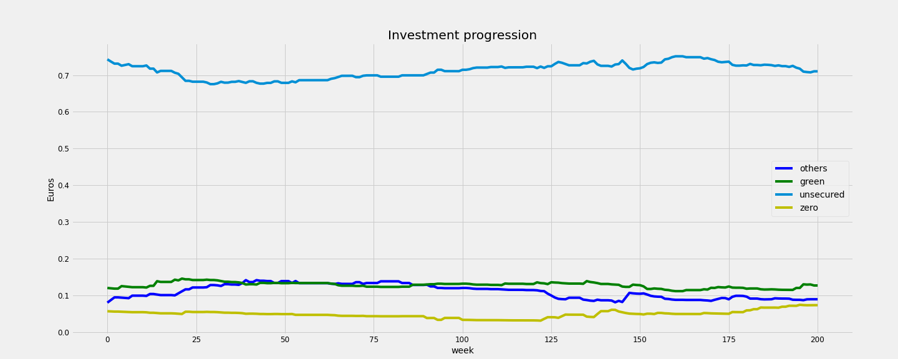
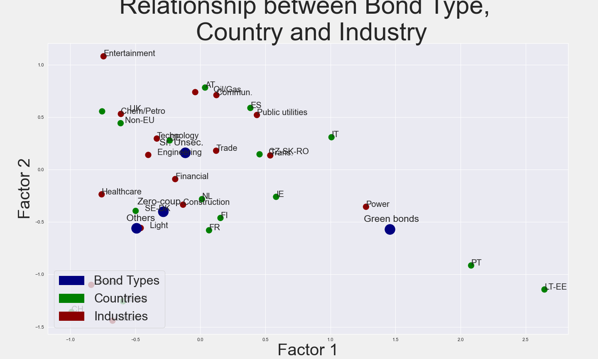
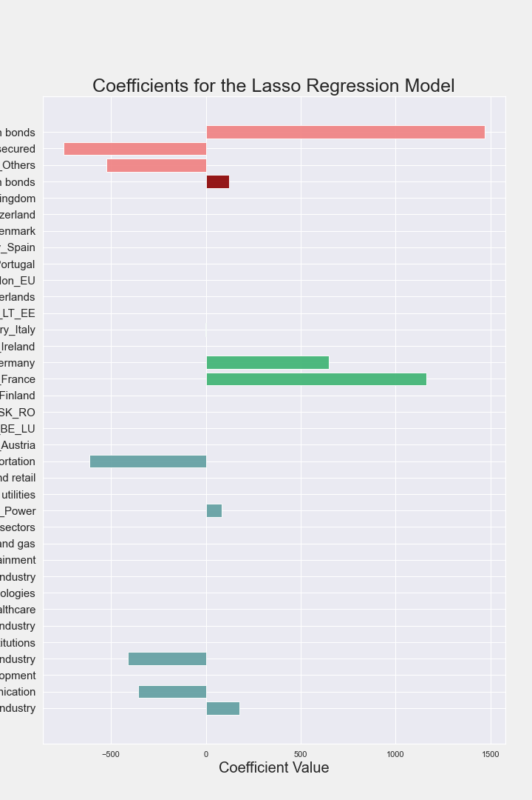
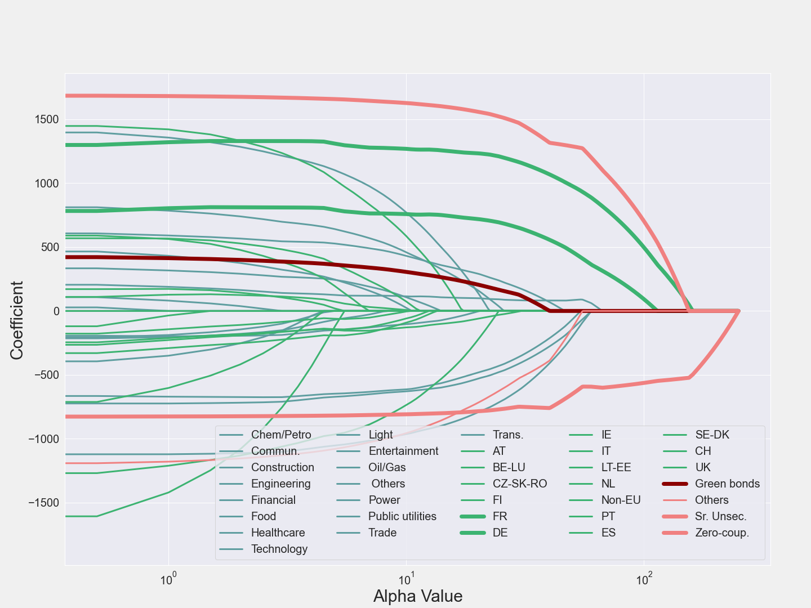
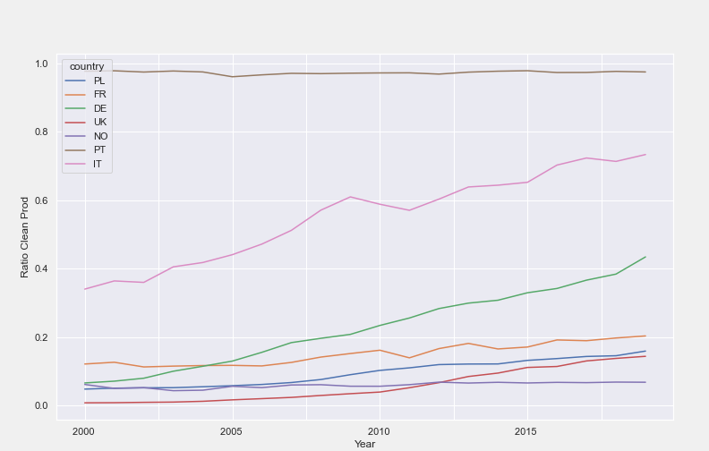
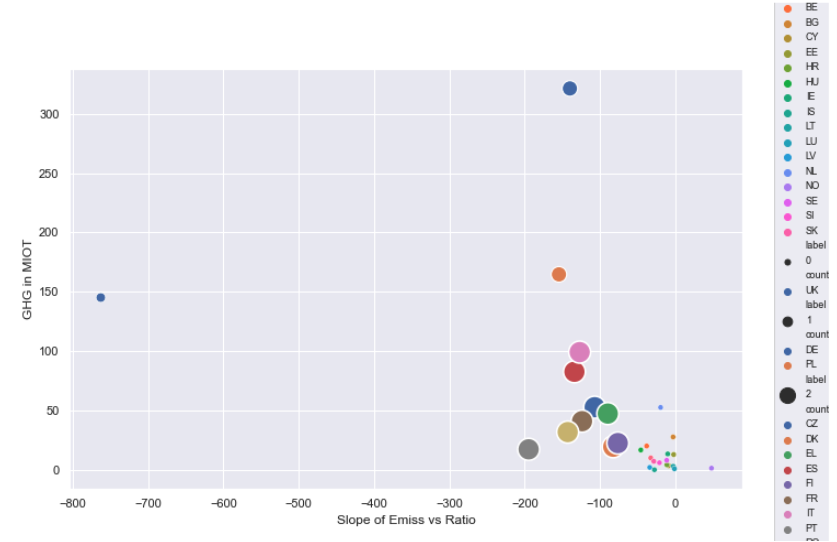

In this project we were tasked with the question: Has the European Central bank been supporting the green economy when purchasing corporate bonds?
There are many ways that evaluation of impact on the green economy could be measured. Our approach looks to evaluate if the European Central Bank has been systematically favouring green bonds, understood as debt security which are used to fund projects with an environmental value (Ehlers and Packer, 2017).
On the website provided we found weekly reports issued by the ECB. From there we determined that this would be the basis of our data. These datasets provided us with weekly reports on the current bonds held by the ECB going back to the second quarter of 2017. After thorough research we decided that the most comprehensive way to collect more data about these weekly reports would be by scraping financial data platforms. Ultimately, we decided upon a website called Cbonds because in addition to information about the bonds, their types, and the monetary values it also provided brief information about the companies affiliated with the bond. We attempted to work with the API, however we found that this approach to web scraping was much more direct and efficient in collecting the data we needed to analyze the European Central Bank’s relationship with the green economy.
The main dataset contains all the bonds held weekly by the bank from the 23rd of June 2017 up to the 7th of May 2021, adding up to a total of 200 weeks. Using the ISIN codes we scraped the financial data website and found a nominal value for the bond, its type e.g., green bond, along with much more information. There were several variations of this dataset used, (e.g., only the data from the week of May 7th, or a dataset with only unique bond ISIN codes) but they all are derived from this main historical dataset.
Preliminary Longitudinal Approach . Using dates, nominal values, and type of bonds a time series was created. The bonds were grouped by type, and their corresponding curves show the progression of the ECB´s investment on a weekly basis. To evaluate a possible systematic policy from the ECB, instead of the raw investment in euros, the curves represent the percentual volume of increase of each type of bond with respect to the total investments held over the same week. If there was a strategy to support the green economy via purchasing green corporate bonds, we would expect to see a progression in which the percentage of green bonds with respect to the total bond purchases, systematically augments.

Figure 1 shows that green bonds represent a rather stable percentage of the total bonds and share this trend with all other bond categories. We notice: 1) The constructed data set only contains the nominal value for each bond but does not inform about the volume of purchased bonds e.g., some bonds have a nominal value of 1 euro, but the number of acquired bonds by the ECB is unknown. 2) During the web scraping process, around half of the bond types were not categorized by \(\textit{Cbonds}\) (i.e., 114930 over a total of 256413). With the information we have, we are unable to determine whether this was intentionally done by the financial website to indicate another type of bond or whether this could just be unreported bond types. Unless this loss is equivalent for each type of bond, this limitation could severely bias the invested progression according to bond type. Overall, this first approach did not find systematic support via acquisition of green bonds, for the period 2017-2021. Still the retrieved data proved to be unfitted to evaluate the ECB support via green bonds to the green economy in a longitudinal manner.
We realize the number of green bonds is very small compared to the total number of bonds bought by the bank. Regardless of that, we focused on discovering if the ECB was giving some type of preference to “green-bonds” over the rest of bonds. With the purpose of making our inferences less sensitive to outliers, we grouped similar countries with a small number of bonds into one label, for data by country, industry and bond types. As part of the descriptive analysis, we look for relationships between industry, country, and type of bond by using a correspondence analysis, plotting the first 2 factors for each of the dummy variables.

From this graph, we conclude that Portugal, Lithuania-Estonia, Italy, and Ireland, are the countries most related to green bonds. Furthermore, the Power industry is extremely related to these bonds too.
In this figure we see why. The ratio of clean production was plotted over time to make fair comparisons across countries with different capacities. Portugal showed an almost complete ratio of clean energy production for the past two decades, and Italy had a higher and slightly steeper evolution of the ratio compared to other countries. These countries, which showed clean production, were good assets for banks like the ECB to invest through their bond purchasing programs. More investment in them can trigger a snowball effect, by which a better maintained infrastructure attracts even more investment. Another reason for their advantage is their climate and location.
We then did some data pre-processing to be able to work with the rest of the data available. These tasks included removing strings from numeric data and changing format types of columns. Later, we created an auxiliary variable “surplus” for each of the bond, defined as the value of the money that the bank gave to the company, containing all the interest and nominal value that the company paid to the bank at the year that the bond was purchased, minus the total bond amount. In this way we obtain the “surplus” of the deal for the company’s side. Additionally, since a different bond could have different issuing dates, we will take all the surplus values to the 2021 year, to make the surplus of the bonds comparable. Additionally, we were forced to assign to floating rate bonds the average rate, and we considered a fixed inflation rate for all years of 1.6% (Euro area value - April 2021).
To detect if the bank is helping the companies that buy green bonds in a significant way, we will do a penalized regression technique, particularly Lasso regression, on the surplus at time 2021, with the variables already analyzed as explanatory variables (industry, country, and type of bond). Since the high number of covariates made complicated to fit a model with the dummy variables, due to possible over-fitting, we selected a group of variables before mode fitting. A Lasso Regression model was chosen due to its nature to shrink the less important coefficients to zero. In this way, if after fitting the model, the coefficient associated with green bonds is positive, we can say that the bank is supporting the green economy. We did not standardize our covariates since all of them are dummy variables. Standardizing will not bring any value, but it will make interpretation of the coefficients more difficult.


For hyperparameter tuning as well as model selection, we made use of 10-fold cross validation. We set our possible alpha values from 0 to 15, because after 15 all coefficients were zero. The alpha that decreases the loss function the most was 30.
Results show that European Central bank has been supporting the green economy when purchasing corporate bonds, although it is not the main priority for the bank to support. We could also see that most supported bonds were from companies in France and Germany, as well as the “Zero-coupon” bonds. The big coefficient for the latter can be explained more than due to a decision of the bank to support those bonds, due to the way we created our outcome variable. Since we were not able to find the exact price at which the bank bought the bond, we used the face value as the price. Due to the nature of “Zero-coupon” bonds of not giving any interest, these bonds are usually bought at a smaller price than the face value. That’s why simply by construction of our model, the surplus for “Zero-coupon” bonds will be high.
But these bonds only account for 7% percent of the analyzed bonds. Regarding the other types of bonds (93% of the total), all three coefficients were non-zero, but the one associated to “green-bonds” is positive (127) whereas the other two are negative and big (-750 and -524). Since the difference between “green-bonds” coefficient and the other two is very big, we can conclude that the ECB has been supporting the “green-bonds” more.
For calculating the present value of the contributions of the company to the ECB, we considered a fixed inflation rate. Also, given the fact that we were not able to find the exact cost at which the ECB bought the bonds, we were forced to use the face value of a bond as its cost, which is not realistic for Zero-coupon bonds. Moreover, For calculating the present value of the interest and face value, we did not consider the exact date at which the bonds were issued or matured, but only the year of those dates. Finally, only 58% of the bonds had a “bond type”. We did not consider the rest of them for model building and correspondence analysis.
We also explored the relationship between some aspects of the green economy and Greenhouse Gas (GHG) emissions with aims to see how countries perform in reducing emissions as green technology popularizes. We consider the case of the power industry. For every country, the clean production ratios are plotted against the GHG emissions.
Given the high correlation, a linear slope for each country could be useful to rank them. Then for every country, there is a slope and an average value of emission.


Among some conclusions from this figure, observe that countries are grouped mostly by their slope, except for Germany and Poland. These countries have been labelled 2 given high average emissions value. This suggests that further changes (substituting coal power plants for others) have to be done in their production plan if they aim to be part of the countries labelled 3. These countries, for a similar slope, have a much lower average emission value. The UK is labelled 1, as the country with the best reduction of emissions. While at the same time, maintaining a reasonable average emission value. Countries labelled 0, have a low average emission value, but not a great reduction value. The case of the Netherlands stands out as having the biggest mean emission value of its group. Norway is the only country with a positive slope, although it has one of the lowest mean emission values.
Ehlers, T., & Packer, F. (2017). Green bond finance and certification. BIS Quarterly Review September.